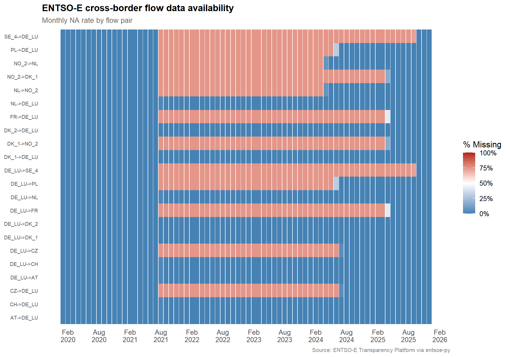

A structured inventory of the three primary data sources used throughout this analysis, including coverage checks, distributional profiling, and a documented treatment of the one material irregularity: reporting-window gaps in ENTSO-E cross-border physical flows.
Overview
This page inventories every dataset feeding the analysis pipeline and documents their temporal coverage, resolution, and quality. The objective is twofold: give the reader confidence that the raw materials are sound, and establish a clean, aligned hourly time index that all downstream stages can join on without surprises.
100 m wind speed, surface solar irradiance, 2 m temperature
Hourly
2020–2025
cdsapi → NetCDF → Parquet
All timestamps are stored in UTC. Timezone-aware joins (particularly across CET/CEST boundaries) are handled at the point of analysis, not in the raw files.
1.0 SMARD (DE-LU)
SMARD is the Bundesnetzagentur’s public market-data portal for Germany– Luxembourg. It provides the highest-resolution view of the German power system: generation by source, total load, and day-ahead prices at 15-minute granularity.
Figure 1: Marginal distributions of all SMARD variables (DE-LU, 2020–2025, hourly).
Takeaway: The SMARD dataset is complete with no missing values across the full 2020–2025 window. Price distributions exhibit the expected heavy right tail (scarcity events) and occasional negative prices (renewable surplus hours). Generation variables show the characteristic bimodal structure of wind output and the zero-inflated daytime peak of solar.
2.0 ERA5 Reanalysis (DE-LU zone)
Copernicus ERA5 provides the meteorological backbone of the analysis: the physical weather drivers that determine how much renewable generation the installed fleet can produce in any given hour. Variables were downloaded at native 0.25° resolution and aggregated to a DE-LU zone average using cosine-latitude area weighting.
A critical assumption for all downstream modelling is that the ERA5 series has no gaps — every hour in the analysis window must be present exactly once.
if (all(names(gap_tab) %in%c("NA", "1"))) {cat("\n✓ No gaps detected — series is contiguous at hourly resolution.\n")} else {cat("\n⚠ Non-unit gaps found — investigate before proceeding.\n")}
✓ No gaps detected — series is contiguous at hourly resolution.
Figure 2: ERA5 variable distributions (DE-LU, 2020–2025). Solar irradiance filtered to daytime hours (> 0 W/m²) to reveal the non-trivial part of the distribution.
Takeaway: ERA5 is complete and contiguous. Wind speed distributions are right-skewed (as expected for a Weibull-distributed variable), and 2 m temperature shows the familiar bimodal winter/summer structure of a continental-temperate climate. Surface solar irradiance is zero-inflated by nighttime hours; the daytime-filtered panel reveals the unimodal distribution that will drive the capacity factor model.
3.0 ENTSO-E Transparency Platform
ENTSO-E supplies three datasets used in this project: day-ahead prices across multiple bidding zones, cross-border physical flows, and actual generation by production type. All were fetched via entsoe-py and stored as Parquet.
Cross-border flows are the one dataset with a material data-quality issue. Several flow pairs — particularly those involving Denmark (DK_1, DK_2) and France — exhibit extended periods of complete missingness.
The heatmap below shows the monthly NA rate for every flow pair. The pattern is consistent with a change in ENTSO-E reporting granularity or data provider switchover rather than random data loss: gaps begin (or end) cleanly at month boundaries and affect entire flow pairs simultaneously.
flows |>mutate(month = lubridate::floor_date(datetime_utc, "month")) |>select(-datetime_utc) |>group_by(month) |>summarise(across(everything(), ~mean(is.na(.x))), .groups ="drop") |>pivot_longer(-month, names_to ="flow_pair", values_to ="pct_missing") |>ggplot(aes(x = month, y = flow_pair, fill = pct_missing)) +geom_tile() +scale_fill_gradient2(low ="steelblue", mid ="white", high ="firebrick",midpoint =0.5, limits =c(0, 1),labels = percent,name ="% Missing" ) +scale_x_datetime(date_breaks ="6 months", date_labels ="%b\n%Y") +labs(title ="ENTSO-E cross-border flow data availability",subtitle ="Monthly NA rate by flow pair",x =NULL, y =NULL,caption ="Source: ENTSO-E Transparency Platform via entsoe-py" ) +theme(axis.text.y =element_text(size =7),panel.grid =element_blank() )

Figure 3: Monthly NA rate by cross-border flow pair. Blue = complete, red = missing. Gaps align with calendar boundaries, suggesting a reporting-window change rather than random data loss.
3.2.2 Treatment strategy
The gaps affect a subset of flow pairs (primarily DK and FR interconnectors) and are concentrated in specific calendar windows. For downstream modelling in Stages 2–3, we adopt the following approach:
Core flow pairs (AT, CH, CZ, NL, PL ↔︎ DE-LU) are complete or near-complete across the full window and will be used without imputation.
Partially available pairs (DK, FR, Nordic interconnectors) will be included only in time windows where they are available. The net export feature constructed in Stage 2 will sum over whichever pairs are non-missing at each timestamp.
No imputation is applied to flow data. Imputing cross-border flows would inject false precision into a variable that is itself a market outcome — it is preferable to let the regression handle partial coverage via the summed net-export feature.
This is a conservative approach. It means the net export variable will undercount total physical flows during gap periods, which may attenuate its estimated coefficient in the price regression. We flag this as a known limitation in the Stage 2 discussion.
If nuclear generation columns contain NAs or zeros from mid-2023 onward, this is not a data-quality issue — it reflects the completion of Germany’s nuclear phase-out (Atomausstieg). Three reactors (Brokdorf, Grohnde, and Gundremmingen C) were permanently shut down on 31 December 2021, halving the remaining fleet. The final three plants — Emsland, Isar 2, and Neckarwestheim 2 — operated in fuel stretch-out mode (no new fuel elements permitted) until they were disconnected from the grid on 15 April 2023, ending over six decades of commercial nuclear power in Germany. (BASE — Federal Office for the Safety of Nuclear Waste Management)
In the context of this analysis, the nuclear shutdown is analytically significant: it removed approximately 4 GW of baseload capacity from the DE-LU merit order, increasing the residual load that must be met by dispatchable thermal and imported power — and thereby amplifying the price sensitivity to renewable variability that Stage 2 aims to quantify.
4.0 Alignment & readiness
All three sources share a common UTC hourly index across 2020–2025. The table below summarises alignment status:
Check
Status
Common temporal resolution
✓ Hourly (SMARD aggregated from 15 min)
Common timezone
✓ All stored as UTC
Date range overlap
✓ 2020-01-01 through 2025 (varies by source)
Missing data
✓ None in SMARD or ERA5; documented gaps in ENTSO-E flows (see Section 4.2)
Join key
datetime_utc across all tables
The data are ready for Stage 1 (Weather → Generation modelling) without further cleaning. The cross-border flow gaps are the only irregularity and are handled by construction in the net-export feature (Stage 2).